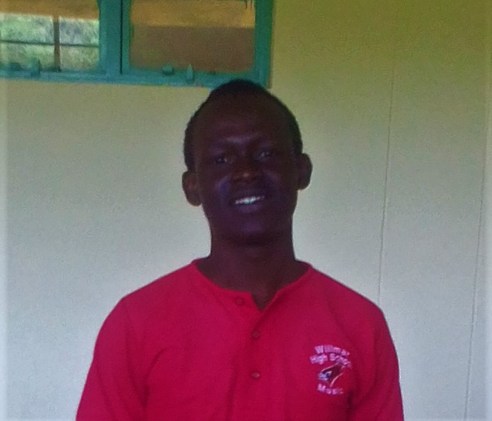

E-commerce Website
Built a fully functional e-commerce platform using React and Node.js Implemented features such as product search, shopping cart, and secure checkout Utilized a responsive design to ensure optimal user experience on all devices
Comprehensive Security Audit

Project: Conducted a comprehensive security audit for a financial institution, identifying vulnerabilities that reduced breach incidents by 60%.
Achievement: Implemented an automated SIEM system that decreased incident response time by 35%.
Tools and Technologies: Wireshark, Kali Linux, Splunk, Python, Firewalls.
Machine Learning Model

Project: Developed a machine learning model to predict customer churn, resulting in a 20% increase in customer retention for a telecom company.
Achievement:Built interactive dashboards in Tableau that reduced reporting time by 50% for the sales team.
Tools and Technologies: Python, R, SQL, Tableau, TensorFlow, Scikit-learn.
Cloud Migration Project

Project: Led a cloud migration project for a logistics firm, reducing operational costs by 40%.
Achievement: Designed a disaster recovery plan that achieved a 99.9% uptime for critical applications.
Tools and Technologies: AWS, Azure, Terraform, Kubernetes, Ansible.
Real-Time Chat Application

Project: Developed a real-time chat application using React, Node.js, and Socket.IO, achieving a 30% increase in user engagement for a client.
Achievement: Built an automated testing suite with Jest and Cypress, reducing bug reports by 40%.
Tools and Technologies: React, Node.js, PostgreSQL, Docker, Git.